|
CLICK (gently!) on Granny's
|
 |
to close this page.
|
 |
B. RECREATIONAL VEHICLES


For a number of years Fred spoke often about his dream to visit Europe, Israel, or other parts of the world. . "Why don't you go?" I queried. He felt he could not spend money on a solo trip because it would be unfair to me. He also stated that he would feel guilty leaving me home while he was travelling in different parts of the world. Of course, I then had my guilt "trip," feeling that because of being paraplegic, I deprived my husband of his dreams.
We had acquired our first recreational vehicle - a trailer - in the 1950's. It was great to take holiday trips, journey to church conventions, and travel to see our relatives. Good and all as those travels were, Fred still cherished his dream to travel abroad.
Finally, I challenged him. "Put up or shut up," I declared in a tone which meant - "either you do it or forever keep quiet." I reasoned with him: he was teaching school at the time, which meant there were two months of holiday time. Our daughter Susan was still at home, working and taking University studies. I would be well looked after. As to money - we had a small reserve of finances. He was now fifty years of age, and I desperately wanted him to fulfill his dreams. If he were to go, finally, finally, I would be able to get rid of my guilt "trip." At last, everything seemed to click in the right way, and he was off to Europe for four weeks. Now, the way Fred travels is ECONOMY class all the way. He stayed in hostels; he bought bread and cold meat to eat on the train; he sought out the least expensive hotels; he purchased train or bus passes; he didn't do extravagant shopping. What a great time he had. He was completely rejuvenated when he came home.
The following year he looked longingly at a church promotional for a trip to the Holy Land. But it was quite a bit of money. So, with encouragement, he looked into going there on his own. The rest is history. He loved every minute of his trip.
Following these two trips, down through the years he went on other trips: another trip to see more of Europe; trip to Brazil; trip to Korea, Thailand, Taiwan to take in the Baptist World Alliance at Seoul. With Susan, he went to Japan. She had worked there for almost four years as a short-term missionary, so she knew her way around. And then when Susan was teaching ESL in the heart of China, he visited with her for several weeks. Our son Gerhart was a short-term teacher in Cameroon, Africa - so Fred felt honor-bound to visit his son! The last overseas trip Fred took was again to Brazil to help build homes for orphans. This was in the 1990's.
However, because he has a heart condition, I have discouraged his travelling. I said to him, "If you ever had to be in an emergency medical situation in a foreign country, I would suffer tremendously, for I would not be able to go and see you." By now, another factor enters in, and that is the high, high rate of medical insurance for those over eighty years of age.
he's had a great time in his life -
going to 39 different countries, territories, etc.
in addition to the places we have gone to with our recreational vehicles.
Ah yes, the "bug" still nips him,
and the wanderlust still beckons to him,
BUT - how many of our readers have travelled as far as Fred?
Not too many, I'm sure.
Our life has been enriched by Fred's travels,
BUT I have figured out a way to beat the system.
Fred went OUT to meet the world.
I have brought the world INTO our home -
we've entertained people from at least 45 different countries!
Our home looks like a mini-museum:
walls adorned with Japanese screens, Chinese embroidery, Thai elephants in gold.
There are artifacts, large and small from a multitude of countries.
What an interesting life we have had
And yes, I also have been overseas:
To Hawaii about five times
To Micronesia for our son's wedding
To Japan - I was chosen as part of a contingent of handicapped persons
to visit this wonderful country
And then to Australia where Susan was teaching at a University -
a great country with so many attractions.
| 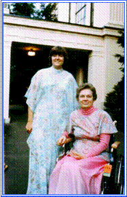 | 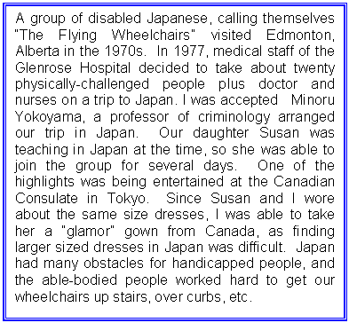 |
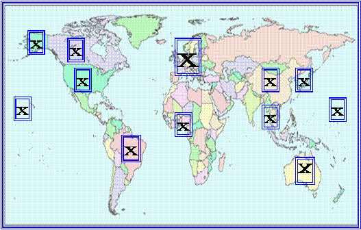
(Viola has visited the countries which have an asterisk)
|
Australia*
Austria Belgium Brazil Cameroon China Denmark England France Germany |
Greece
Guam* Holland Hong Kong Israel Italy Japan* Korea Luxemburg Macau |
Malaysia
Marshalls* Monaco Norway Palau* Palestine Ponape* Portugal Scotland Singapore |
Spain
Sweden Switzerland Taiwan Thailand Truk* United States* Wales Yap* |
|
UNITED STATES:
Hawaii, Alaska, Texas, California, Oregon, Long Beach WA, Arizona |
|
SPECIAL PLACES IN CANADA:
Banff, Porteau Cove, Long Beach (Vancouver Island) |
TRAILER/VAN/MOTOR HOME
IN BEAUTIFUL PROVINCIAL PARKS
On the left, it is temporarily parked beside our condo building.
In the right picture, it is tucked amongst the trees
at a Provincial Campsite.
ALBERTA
Mount Rundle
and Sulphur Mountain Banff |
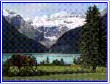 Lake Louise
Banff |
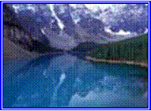 Moraine Lake
Banff |
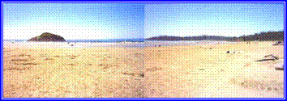
Long Beach, Tofino
In earlier years, we could park right on the beach.
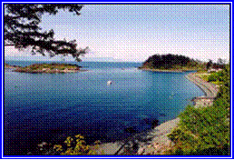 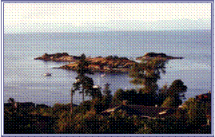
HAMMOND BAY, NANAIMO
We didn't need a rec vehicle here -
This was an every-day view from our home!
Load up a motorhome, or any other type of recreational vehicle, with tasty food; board games (in case it rains); and a stack of good books. In British Columbia's scenic provincial parks, choose a site by the restless ocean, by a tranquil lake, or a wilderness area. At the famous Banff National Park in Alberta, many campsites overlook the rugged vistas of the Bow Valley and Mount Rundle ("Rundle" is named after the first Methodist missionary in that area). Say good-bye to television, house guests, computers (lap-tops a no-no). Use your cell phone only if there is an emergency! Provincial Parks do not supply electricity - an excellent feature, which leaves two options: go to bed early or enjoy a crackling camp fire. Roasting marshmallows under a starlit sky will set the stage for peace and contentment. This recipe is guaranteed to rest your body, renew family relationships, refresh your outlook on life, and revive your soul. GUARANTEED
AND WAS PRINTED IN A NEWS MAGAZINE
YEARLY SALARY $1800
COST OF TRAILER $1900
In 1949 Fred started his pastoral career at a small rural church in southern Alberta. A number of churches in the area joined together to provide summer camps at a local lake for young people. Pastors set up and conducted various programs, and whenever possible, their wives also participated with some of the activities. The camp in this particular area was on a hillside. There were no amenities such as modern bathroom facilities, running water, or electricity. Lodging for the staff was up the steep incline with impossible wheelchair accessibility, and since I was completely unable to walk up even a small slope, only one option remained: Fred, with his strong arms, carried me up and down to the rustic cabin. (Believe me, I weighed a lot less than I do now.)
Now, the camp cook's quarters were on the level section where the camp eating area, chapel area, and activities were conducted. We asked her if I might be able to rest in the middle of the day on her bed to save Fred carrying me up and down an extra time. We were quite stunned when she refused. The two weeks at camp were stressful for us because of the rough contour of the premises. "If we had a trailer," we mused, "we would manage much better."
Another unrelated incident added to our need of a recreation vehicle. We had to stay overnight at a hotel. The little town's hotels had no elevator, and as luck would have it, we had to take a room on the second floor. Problem: does Fred take up the children first and leave them alone in the room, and then come back to the car for me. Or, does he take me up first and leave the children alone in the car? And then, he had all the suitcases to tote to the room. Once he got all of us, plus the luggage in the room - someone would pipe up that he/she was hungry. This meant that poor Fred had to go down the street and bring food to us. Although he never complained, it goes without saying that it was a cumbersome situation. Well, now, if we had a trailer - we would have our own food; our beds would be in the trailer; and best of all, no more carrying of mom and the kids up and down stairs.
when your YEARLY salary is only $1800?
Route One: the banks. However, one had to make regular payments plus interest, which may not be possible on such a low salary.
Route Two: write home to your folks for money. Well, I had no parents to whom I could write, and Fred's parents were not financially able to help.
Route Three: find a good friend with lots of money, and…………
Pay back what you can and when you can.
No interest.
And so we purchased our first trailer in 1951 - a 16 foot Terry Rambler. It had beds, sink, heater, propane fridge. Because in those years, there weren't self-contained toilets in rec vehicles, a little potty was used in an emergency.
On one occasion, Fred had to go back to work, so he left us in the trailer at Banff for another week. My friend Alice joined us for the week, to look after me in particular, and to have a very inexpensive holiday for herself. We were parked next to the washroom facilities, but one morning about 4:00, I needed to use the washroom. When only family members were present in the trailer, I would normally use the "potty" rather than go to all the trouble of going in and out of the trailer to use the park facilities. I felt a little embarrassed to use the "potty" with Alice in the trailer, so I opted to trek to the convenient washroom close by. I was no sooner at the steps of the trailer when I spotted, to my terror and dismay, a huge bear scouting around the garbage cans for food.
Knowing I could never run from such a creature, I abandoned my modesty and stayed in the trailer! (And it was a giant step forward in later years to have rec vehicles with their own washroom setups.)
What a blessing, what a convenience, what a joy it was to have our trailer. No more disgruntled cooks to deal with. No more hotel stairs to climb. No more late night jaunts for food - everything was in the trailer. And holidays were inexpensive because we didn't have to rent lodging facilities.
in due time. It was a time of denying ourselves
many other treats - but well worthwhile.
In 1956 we attended a large conference of our church denomination - both from the United States and Canada - in Waco, Texas. Think of the mileage involved to Texas from Alberta. Do you know how many recreational vehicles we passed along the way?
Nowadays you wouldn't be able to keep count of the multitudes of recreational vehicles on the road.
From 1951 until about 1980, we had several different trailers. But finally we were able to purchase a trailer with toilet facilities. It was terrific.
In the 1990's when pulling a trailer was a little more of a hardship for Fred, we opted for a camperized station wagon, which was quite convenient now that there was just the two of us camping together.
Finally, we purchased a motorhome, which we had until 2000. We had to park our trailer at a friend's place because of living in a condo which did not have facilities for recreational vehicles. Thinking that this setup would not be feasible in the long term, and as well, increasing age, finally led Fred to say it was time to give up camping. I was heart-broken when the motorhome sold because I loved the beautiful Provincial Parks we have. But - all good things come to an end.
With our recreation vehicles, we had the most fantastic holidays as well as attending church conventions.
California - Church Convention
Calgary - Church Convention
Years of helping at church camps
Our favorite place was Porteau Cove, mid-way between Horseshoe Bay
and Squamish. This is where we met the movie star
Jaclyn Smith (look up our link on Jaclyn)
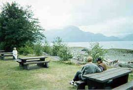 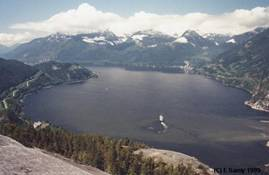
IF YOU CAN'T AFFORD A REC VEHICLE,
THEN TRY A "WRECK" VEHICLE
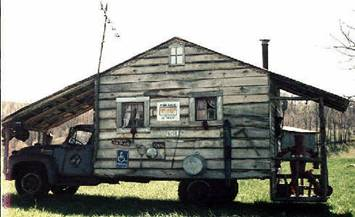
|
CLICK (gently!) on Granny's
|
|
to close this page.
|